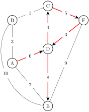
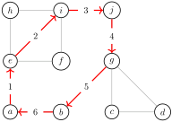
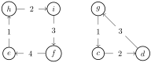
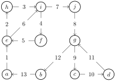

Section 2.2 Eulerian Walks
In this section we introduce the problem of Eulerian walks, often hailed as the origins of graph theroy. We will see that determining whether or not a walk has an Eulerian circuit will turn out to be easy; in contrast, the problem of determining whether or not one has a Hamiltonian walk, which seems very similar, will turn out to be very difficult.
Subsection 2.2.1 The bridges of Konigsburg
The city of Konigsberg (now Kaliningrad) was built on two sides of a river, near the site of two large islands. The four sectors of the city were connected by seven bridges, as follows (picture from Wikipedia):

A group of friends enjoyed strolling through the city, and created a game: could they take a walk in the city, crossing every bridge exactly once, and return to where they started from? They couldn’t find such a walk, but they couldn’t prove such a walk wasn’t possible, and so they wrote to the mathematician Euler, who proved that such a walk is not possible.
Subsection 2.2.2 Eulerian Walks: definitions
We will formalize the problem presented by the citizens of Konigsburg in graph theory, which will immediately present an obvious generalization.
We may represent the city of Konigsburg as a graph \(\Gamma_K\text{;}\) the four sectors of town will be the vertices of \(\Gamma_K\text{,}\) and edges between vertices will represent the bridges (hence, this will not be a simple graph).
Then, the question reduces to finding a closed walk in the graph that will uses every edge exactly once. In particular, this walk will not use any edge more than once and hence will be a trail.
Checkpoint 2.2.2.
Definition 2.2.3.
Let \(G\) be a graph. An Eulerian cycle is a closed walk that uses every edge of \(G\) exactly once.
If we weaken the requirement, and do not require the walk to be closed, we call it an Euler path, and if a graph \(G\) has an Eulerian path but not an Eulerian cycle, we say \(G\) is semi-Eulerian
The question of the walkers of Konigsburg is then equivalent to asking if the graph \(\Gamma_K\) is Eulerian. The birth of graph theory is usually marked to the following theorem, proven by Euler:
Theorem 2.2.4.
Subsection 2.2.3 A digression on proofs, formality, and intuition
Before discussing the proof of Theorem 2.2.4, it’s worth a little meta-discussion about proofs, intuition vs. rigor, and mathematics as a whole. The proofing Theorem 2.2.4 is a common exam question, and you may not be used to studying for reproducing proofs on exams. Certainly one way to prepare for such a question is to memorize the proof word for word. There doesn’t seem to be a lot of obvious value in this approach, however. So why ask these questions on the exam? And this opens the door to more philosophical questions as well: how should we think/interact with proofs anyway? What’s the point of it all?
Usually in books or in lectures, proofs are only given in slick, elegant, polished formal versions. There are many reasons for this: there’s a certain beauty to it; it’s important to write it out formally to make sure it’s all correct; there’s only so much time in lectures, and brevity is a virtue anyway. People turn away from long works, and the main point of a proof, after all, is to prove something, and it’s easier to check that it’s all correct if it’s shorter.
But there’s a very real downside to this presentation of proofs as the finished, elegant thing. Most important to me is that the way mathematics is written formally on the page is very different from how it lives actively in our brains (or my brain, at least). Nobody (or certainly very few people) comes up with proofs in the elegant short start to finish way that they’re written. Typically, there’s a mess of chaotic half ideas that slowly get refined down to the written proof that you see. But often the mess is the exciting part,
We sketch a few of the main ideas of the proof in an informal setting now, before giving a complete formal proof. To learn this proof for the exam, you should have this informal picture in your head, and perhaps a skeleton outline of the main formal points that need to be shown. You shouldn’t try to memorize the formal proof word for word like a poem; instead, practice expanding out from the informal ideas/skeleton proof to the full formal proof on your own a few times.
It is much easier to see that if a graph \(G\) is Eulerian, then every vertex has even degree. Suppose we wanted to show that a given vertex \(v\) was Eulerian; let us stand at the vertex \(v\) and have a friend trace out the Eulerian cycle. We’ll wait for a while, and then the friend will appear at \(v\) along some edge \(e_1\text{,}\) and then live along some different edge \(e_2\text{.}\) We’ll wait some more, and they’ll reappear coming from new edge \(e_3\text{,}\) and then leave again along some edge \(e_4\text{.}\)
This will continue until they have arrived or left by every edge that hits \(v\text{.}\) But every time they visit \(v\text{,}\) they must arrive by one edge, and leave by another one, and hence every visit uses up an even number of edges, and so the degree \(d(v)\) of \(v\) must be even. But there was nothing special about the vertex \(v\text{,}\) and hence the degree of every vertex must be even.
To argue the other way is more difficult; before trying to show there’s a closed path that uses all the edges, let’s just construct any closed path. We pick some vertex \(v_0\) to start at, and just randomly choose an edge out of \(v_0\text{,}\) to some other vertex \(v_1\text{,}\) and from there randomly choosing any edge we haven’t used yet to another vertex \(v_n\text{,}\) and so on.
To construct a closed walk, we’d like to show we eventually have to return to \(v_0\text{.}\) We’re only working with finite graphs, so our walk can’t continue forever; the only possibility we have to rule out is that we reach some vertex \(v_n\) and find that we have already used every vertex incident to \(v_n\text{.}\) But as we saw before, the path will pair up the edges incident to each vertex as an arriving edge and a departing edge, and we know the degree of \(v_n\) is even. If the path has already visited \(v_n k\) times, then we’ll have used \(2k\) of the edges incident to it; when we arrive for the \(k+1\)st time we’ll use one edge, and in all we’ll have used \(2k+1\) edges, an odd number; since the degree of \(v_n\) is even there must be at least one edge we haven’t used to exit by.
You might worry that the argument above suggests we can carry on the walk forever, which we obviously can’t do since the graph is finite, but the argument above doesn’t work for \(v_0\text{:}\) when we start the path out at \(v_0\text{,}\) we haven’t had to arrive there, and so the edge we initially leave by is not paired with anything. Therefore, if \(\Gamma\) has all vertices with even degree, and we walk randomly for as long as we can, we’ll always get stuck at our starting vertex.
Hence, we have shown that if \(\Gamma\) is a graph with all vertices having even degree, there will exist some closed walk in \(\Gamma\text{,}\) but the walk we created was chosen randomly, and there’s no guarantee it will include all the edge of \(\Gamma\) -- in all likelihood, it won’t.
But if we look at the edges we haven’t used, they will form a simpler graph. \(\Gamma^\prime\text{.}\) There’s no reason for \(\Gamma^\prime\) to be connected, but it’s not too hard to see that every vertex of \(\Gamma^\prime\) will still have even degree: in \(\Gamma\) every vertex had even degree, and we saw in our first proof that a closed walk that doesn’t repeat edges uses up an even number of edges at each vertex, and so we’ll have an even number of edges left at each point. Thus, each connected piece of \(\Gamma^\prime\) satisfies the hypothesis of the problem, and is simpler, so we can try to find a closed walk on each of connected piece of \(\Gamma^\prime\text{,}\) and then "stitch" the results together to get a walk that uses all the pieces. In the formal proof, this process is best captured using induction, and we’ll save the complete description until then, but for now we illustrate the process in an example

Example 2.2.6.
Let’s see an example of how the process of finding an Eulerian path works for the graph \(\Gamma\) in Figure below.
It probably isn’t hard to immediately find an Eulerian cycle for \(\Gamma\) just by examination, but to illustrate the algorithm to begin with, we are going to deliberately choose a cycle that doesn’t use every edge, the cycle aeijgba show in the next figure:

To extend our cycle to an Eulerian cycle, we delete all the edges used in the graph, and study the remaining graph. In our case, this graph has two connected components, a four cycle and a three cycle. Both of these are cycles themselves, they’re trivially Eulerian, -- in general, it might take some work to find an Eulerian cycle for the components, but won’t be too hard as the graph will be smaller.

Finally, we stitch our Eulerian paths together. We follow our initial cycle that wasn’t an Eulerian cycle, and the first time we hit a vertex that’s in one of the other cycles, we insert that cycle in before we continue along our original path. In our example, our original cycle was aeijgba. a is not eitehr of the other components, but e is in the four cycle, so before we continue on our original cycle to i, we insert the four cycle ehije, giving aehije. We now continue along our original cycle, adding ei, ij, jg, until we reach a vertex g that’s in one of the added cycles, which we then insert, giving aehijeijgcdg as our cycle so far.
Continuing this process, we find aehijeijgcdgba as an Eulerian cycle.

Proof.
We first show that if \(\bfG\) is Eulerian, then every vertex \(v\in\bfG\) has even degree. For suppose the Eulerian cycle visits the vertex \(v k\) times. Each time it visits \(v\) it must arrive by one edge, and leave by a different edge. Since the walk is Eulerian, every edge adjacent to \(v\) will be used exactly once by the walk, and so we see that \(d(v)=2k\) as desired.
Now we suppose that \(\bfG\) is connected and that every vertex has even degree. We will induct on the number of edges of \(\bfG\text{.}\) If it has no edges, then the theorem is vacuously true -- we can just take the empty walk.
For the inductive step, suppose that \(\bfG\) is connected with \(m\) edges, and that every vertex of \(\bfG\) has even degree. Further assume, for the inductive hypothesis, that every graph \(\bfH\) with these properties and less than \(m\) edges is Eulerian.
Suppose for now that we can find a closed walk \(w\) in \(\bfG\) that doesn’t repeat any edges -- we will justify that this at the end of the proof. If the closed walk \(w\) uses all the edges of \(\bfG\text{,}\) then \(w\) is an Eulerian cycle, and we are done.
If \(w\) doesn’t use all the edges of \(\bfG\text{,}\) we can delete all the edges used in \(w\) and get a graph \(\bfG\setminus w\) with fewer than \(m\) edges. Though \(\bfG\setminus w\) might not be connected, every vertex in \(\bfG\setminus w\) will have even degree, as we’ve subtracted an even number of edges from each vertex that \(w\) visits as argued in the first part of the proof. Thus, by the inductive hypothesis each connected component \(\bfG\setminus w\) will have an Eulerian cycle. Since the \(\bfG\) is connected, \(w\) must include at least one point from each component of \(\bfG\setminus w\text{,}\) and so we can insert the Eulerian walk on the edges of each component of \(\bfG\setminus w\) from each component into \(w\) when we reach that component, to obtain a closed walk \(w^\prime\) that uses all the edges of \(\bfG\) exactly once, as desired.
All that remains is to justify that \(\bfG\) contains at least one closed walk, given that every vertex has even degree and it contains at least one edge. We form a walk \(w\) by starting at any vertex \(v\) and at each step choosing any edge we’ve never traversed before at random as the next step of the walk. We claim that \(w\) must eventually return back to the starting vertex \(v\text{.}\) Since \(\bfG\) is finite, and we don’t repeat edges, the only way we could fail to return to \(v\) would be if our walk "got stuck" -- that is, at some point we reach a vertex \(u\) and find that every edge out of \(u\) has already been traversed. However, we know that \(u\) has an even number of edges, and also arguing as in the first paragraph of the proof that every time the walk \(w\) visits \(u\) it must use up two edges, one for arrival and one for departure. Hence, when we arrive at \(u\) at any time we must have used up an odd number of edges at \(u\) -- an even number from all the previous times we have visited \(u\text{,}\) plus one more that we just arrived from. Since \(u\) has even degree, there must always be at least one edge available for us to choose from, and so we can never "get stuck" and will eventually reach \(w\) again.
Remark 2.2.11.
Note that it does not say: "A graph \(\Gamma\) is Eulerian if and only if it is connected and every vertex has even degree." This statement in quotation marks is false, but for "stupid" reasons. If \(\Gamma\) is Eulerian, and \(E_n\) is the graph with \(n\) vertices wit no edges, then \(\Gamma\sqcup E_n\) is Eulerian but not connected. These are the only examples of such graphs.
Theorem 2.2.12.
A connected graph \(\Gamma\) is semi-Eulerian if and only if it has exactly two vertices with odd degree.
Proof.
A minor modification of our argument for Eulerian graphs shows that the condition is necessary. Suppose that \(\Gamma\) is semi-Eulerian, with Eulerian path \(v_0, e_1, v_1,e_2,v_3,\dots,e_n,v_n\text{.}\) Then at any vertex other than the starting or ending vertices, we can pair the entering and leaving edges up to get an even number of edges.
However, at the first vertex \(v_0\) the path leaves along \(e_1\) the first time but never enters it accordingly, so that \(v_0\) has an odd degree; similarly, at \(v_n\) the path enters one final time along \(e_n\) without leaving, and so \(v_n\) also has an odd degree.
To see the condition is sufficient we could also modify the argument for the Eulerian case slightly, but it is slicker instead to reduce to the Eulerian case. Suppose that \(\Gamma\) is connected, and that vertices \(v\) and \(w\) have odd degree and all other vertices of \(\Gamma\) have even degree. Then we can construct a new graph \(\Gamma^\prime\) by adding an extra edge \(e=vw\) to \(\Gamma\text{.}\) Then \(\Gamma^\prime\) is connected and every vertex has even degree, and so it has an Eulerian cycle. Deleting the edge \(e\) that we added from this cycle gives an Eulerian path from \(v\) to \(w\) in \(\Gamma\text{.}\)